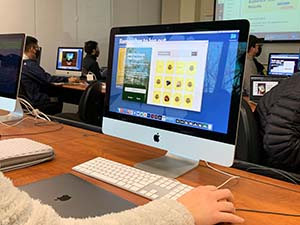
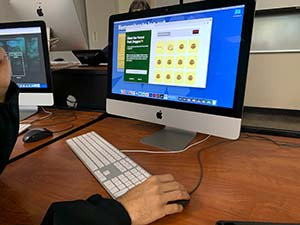
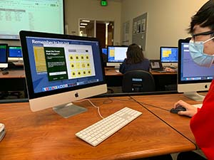

Takeways
01
Need for sounds that convey correct vs incorrect match
In all three of the testing sessions I found that the participants were confused if they made a match and had to pause to see if the cards flipped again. In a time sensitive game, the pause is not ideal. They mentioned this in the feedback citing that they wished there was a signifier that made this clear. Audio effects or color tints on the cards would be a way to solve this issue.
02
Clarify that it is card matching game in instructions
The participants did not spend too much time reading the instructions(10-15 seconds max). When starting the game they were immediately able to play and understand the affordances within the game. However, during the post-testing questions, I found that they did not expect a card game based on the instructional text. For the first time playing, it was unexpected but it did not have an effect in later rounds. A suggestion made was to emphasize that it is not only a matching game but a card matching game.
03
Signifiers in end screen for all matches vs no matches
The end screen provided all the necessary information but felt empty to 2 out of 3 participants. Having a background color or graphic that signified whether the user matched all the cards or did not would add to the feeling of gratification or motivation to play again. The reward photos were all received positively but felt like they were floating on the page so adding some styling or making them bigger could help this issue.
Testing Breakdown
Participant 1
The first participant spent some time on the instructions and then moved onto the game. There were no issues in the understanding of playing the game but it did identify some instances where cards were not flipped back if the user clicked too quickly. Based on the instructions, he was not expecting a card game. The game was simple but it was unclear when a match was made; an audio clip would be helpful to signify this. On the end screen, all the information was there but he wishes that there was a use of color to emphasize if all the cards were matched or not.

Participant 2
This participant hesitated to start playing the game as he double checked the instructions. He had a similar issue of pausing to find out if the cards flipped were a match and wished that there was some visual or audio confirmation to let him know quickly. He helped identify simple issues such as spelling mistakes as well as discrepancies with hover states. In the end screen, he wished that there was a visual that made it clear if the user won or lost. He voiced struggles in learning the dogs names in the first couple of rounds so it would be nice to have a ‘hints’ feature that can aid in the learning process by exposing one match.

Participant 3
This participant read through the instructions quickly and did not hesitate while playing the game but he did pause to confirm that flipped cards were a match. When asked about the instructions, he mentioned that he expected a game with two columns and drawing a line between them, not a card game. He found that the delay of the score and timer appearing on the screen was jarring and wished it would appear with the cards. He did express a wish for a sound that signified a match vs incorrect match so that he did not have to pause for as long. The cursor stays an arrow over the cards so a suggestion was made to change the cursor to a point to make it clear that a user can click on the card.

Applying What I Learned
This user testing session was really helpful in finding issues that I could not catch after working on this project for so long. I was able to find a range of issues from minor to major as well as obtain great suggestions to further improve the game. The main changes I plan to make are those addressed in the takeaways: adding sounds, clarifying instructions, and work on the end/score screen. I will also be making some minor changes where I have spelling mistakes as well as adding some hover states. Due to the time constraint, I will be focusing on these areas but I liked the suggestions I received from the participants in exploring a hints feature as well as hover states for the cards but I will try to add those in my free time after this project is due.